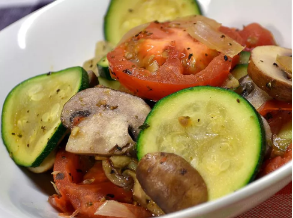

Back to Homepage
Sauteed Zucchini Recipe
This sauteed zucchini is a really easy recipe that tastes great.
Fresh veggies are lightly cooked together. You can add a cup of
cooked pasta if youo wish to give it more heft as a side dish. If
there's leftover pasta, it can be used in this too.

Preparation Time:
10 mins |
Cook Time:
20 mins |
Serves:
6
Ingredients
-
1 tablespoon butter
- 1 sweet onion, chopped
-
1 clove garlic, minced
-
2 tomatoes, chopped
-
1/2 cup water, divided
-
1 cube chicken
-
1 large zucchini, thinly sliced
-
ground black pepper to taste
Directions
-
Melt butter in a large skillet over medium heat; cook and stir
onion in melted butter until translucent, about 5 minutes.
-
Add garlic; cook and stir 1 minute more.
-
Stir tomatoes and 1/4 cup water into the mixture;cover. Cook,
stirring occasionally, until tomatoes have reduced slightly, about
5 minutes.
-
Pour another 1/4 cup water into the skillet. Add chicken cubes and stir
until chicken is mixed thoroughly. Add zucchini;continue cooking until
zucchini is tender, 5 to 7 minutes.
-
Season with black pepper and serve.
Back to Homepage